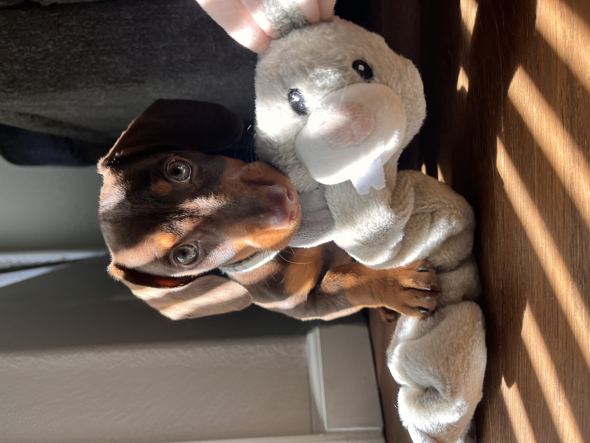

Confident, Driven, Curious
I love learning how the world works and then creating new or improved ways to solve the issues within it.
"Seeking knowledge is like opening doors, and I know there are doors everywhere."
- George St. Pierre

Check out my pups Instagram!